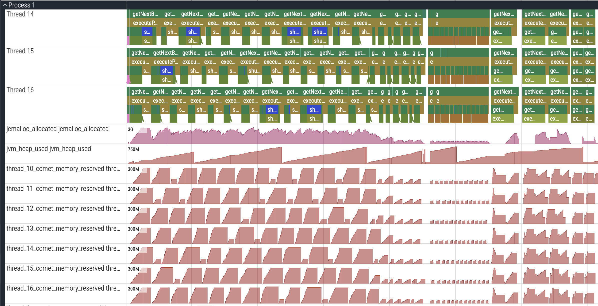

Tracing#
Tracing can be enabled by setting spark.comet.tracing.enabled=true.
With this feature enabled, each Spark executor will write a JSON event log file in
Chrome’s Trace Event Format. The file will be written to the executor’s current working
directory with the filename comet-event-trace.json.
Native memory is traced as native_allocated. Comet wraps whichever global allocator the build
selected and counts the bytes it has handed out. It counts only what Rust code allocated, so it can be compared against the
memory pool’s reservations without the allocator’s own caching in the way. The same figure appears in
the executor’s periodic memory usage log, which does not need tracing; see
Sizing the Overhead from the Memory Usage Log.
Enabling the jemalloc feature adds a second measure, jemalloc_allocated, which also includes
jemalloc’s own metadata and fragmentation:
make release COMET_FEATURES="jemalloc"
Example output:
{ "name": "decodeShuffleBlock", "cat": "PERF", "ph": "B", "pid": 1, "tid": 5, "ts": 10109225730 },
{ "name": "decodeShuffleBlock", "cat": "PERF", "ph": "E", "pid": 1, "tid": 5, "ts": 10109228835 },
{ "name": "decodeShuffleBlock", "cat": "PERF", "ph": "B", "pid": 1, "tid": 5, "ts": 10109245928 },
{ "name": "decodeShuffleBlock", "cat": "PERF", "ph": "E", "pid": 1, "tid": 5, "ts": 10109248843 },
{ "name": "executePlan", "cat": "PERF", "ph": "E", "pid": 1, "tid": 5, "ts": 10109350935 },
{ "name": "getNextBatch[JVM] stage=2", "cat": "PERF", "ph": "E", "pid": 1, "tid": 5, "ts": 10109367116 },
{ "name": "getNextBatch[JVM] stage=2", "cat": "PERF", "ph": "B", "pid": 1, "tid": 5, "ts": 10109479156 },
Traces can be viewed with Perfetto UI.
Example trace visualization:

Analyzing Memory Usage#
The analyze_trace tool parses a trace log and compares the process-wide native allocation counter against
the total memory reserved by Comet’s memory pools. This is useful for detecting untracked native memory
growth where native allocations exceed what the memory pools account for.
Build and run:
cd native
cargo run --bin analyze_trace -- /path/to/comet-event-trace.json
The tool reads counter events from the trace log. Because tracing logs metrics per thread, native_allocated
and jemalloc_allocated are process-wide values (the same global allocation reported from whichever thread
logs it). The total tracked memory comes from comet_memory_reserved_total, which covers every pool type and
counts each pool once process-wide. Every plan registers its pool for this total, including plans running
with tracing disabled, because the allocation counter it is compared against covers them too. The per-thread
thread_NNN_comet_memory_reserved values must not be summed to obtain it: a shared pool reports its full
reservation on every thread that references it, so summing multiplies it by the thread count.
The allocation counter and the total are emitted back to back on one thread when a traced plan finishes executing, and the tool compares only samples paired that way, so a fresh allocation is never measured against a stale reservation. Traces recorded before that counter existed are still analyzed from the per-thread sum, and the tool warns that the sum is not the same measure.
The tool analyzes native_allocated when the trace contains it, since that counts only what Rust code holds
from the allocator, and otherwise falls back to jemalloc_allocated. The output names the counter it used. A
trace with neither counter is rejected.
Sample output, with the violation table and the per-thread list elided:
=== Comet Trace Memory Analysis ===
Counter events parsed: 2946
Allocation counter: native_allocated
Pool total source: comet_memory_reserved_total (process-wide)
Peak native_allocated: 395.9 MB
Peak pool total: 250.9 MB
Peak excess (native_allocated - pool): 171.2 MB
WARNING: native_allocated exceeded pool reservation at 87 sampled points:
Time (us) native_allocated pool_total excess
------------------------------------------------------------------
14662 19.0 MB 0.7 MB 18.3 MB
109895 48.2 MB 22.4 MB 25.8 MB
1623833 94.0 MB 71.4 MB 22.6 MB
3315951 193.8 MB 167.8 MB 26.0 MB
4107671 233.7 MB 199.9 MB 33.8 MB
...
5441547 389.3 MB 218.1 MB 171.2 MB
6445070 235.6 MB 209.8 MB 25.8 MB
--- Final per-thread pool reservations ---
thread_60_comet_memory_reserved: 39.2 MB
thread_61_comet_memory_reserved: 48.3 MB
thread_62_comet_memory_reserved: 27.2 MB
...
Total: 245.8 MB
A steady excess is expected, since not every native allocation goes through a pool (Arrow IPC buffers, for
instance), and jemalloc_allocated additionally includes the allocator’s own metadata and fragmentation. An
excess that grows over the run, as it does from 26 MB to 171 MB above, is the signal worth chasing: that is
memory the pool is not accounting for.
Arrow memory on the JVM side is reported separately, because it is off-heap and so invisible to
jvm_heap_used. Comet imports batches from native over the Arrow C Data Interface, and Arrow
charges a buffer to whichever allocator owns it, so those imports are taken against a dedicated
child allocator and reported as jvm_arrow_imported, within the jvm_arrow_allocated total.
Both are allocator charges. They report what each allocator is accountable for, not where the bytes were allocated, and their difference is not a bound on the Arrow memory the JVM allocated itself. Ownership and allocation come apart in both directions:
Bytes the JVM allocated get charged to the import allocator. Arrow’s importer allocates the owning
ArrowArraystruct there, andBitVectorHelper.loadValidityBufferallocates a validity bitmap there when an imported vector is all-valid or all-null and carries no validity buffer (512 bytes per 4096 rows).Imported bytes get charged to the root. An ownership transfer re-parents a charge without moving the payload, so a vector that shares buffers with an import, such as a slice of a UDF input, can leave the root accountable for memory the producer allocated.
For the same reason neither counter is a count of unique physical bytes, and jvm_arrow_imported
is not guaranteed to be included in native_allocated. Usually the producer is Rust and the bytes
are counted in both, but a buffer that Comet exported to native and that native passed back by
reference is imported without the Rust allocator ever having handed it out. Finally, the two
counters are separate reads of process-wide state, so concurrent tasks can change them between
samples: they are not an atomic per-query balance, and neither is a measure of RSS.
Definition of Labels#
Label |
Meaning |
|---|---|
jvm_heap_used |
JVM heap memory usage of live objects for the executor process |
jemalloc_allocated |
Native memory usage for the executor process (requires |
jvm_arrow_allocated |
Bytes charged to Comet’s Arrow allocator tree on the JVM, including buffers imported from native over the Arrow C Data Interface |
jvm_arrow_imported |
Bytes charged to the Arrow C Data Interface import allocator, a subset of |
native_allocated |
Bytes handed out by the Rust global allocator, process-wide. Approximate to within 64 KiB of un-flushed delta per live thread. |
comet_memory_reserved_total |
Total memory reserved across every live Comet memory pool, process-wide, whatever the configured pool type. Counts a pool shared between execution contexts once, so unlike the per-thread counters it can be compared directly against an allocation counter. |
thread_NNN_comet_memory_reserved |
Memory reserved by Comet’s DataFusion memory pool (summed across all contexts on the thread). NNN is the Rust thread ID. Do not sum these across threads: a shared pool reports its full reservation on every thread that references it. |
thread_NNN_comet_jvm_shuffle |
Off-heap memory allocated by Comet for columnar shuffle. NNN is the Rust thread ID. |